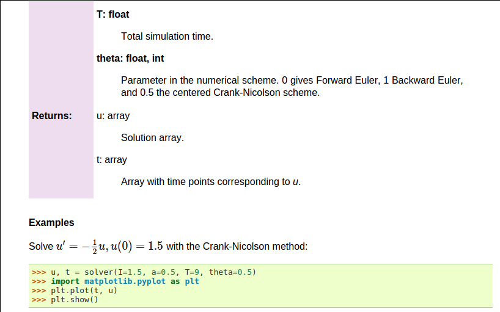

Figure 1: Experimental code in a notebook.

We address the perhaps simplest possible differential equation problem $$ \begin{align} u'(t) &= -au(t), \quad t \in (0,T], \tag{1}\\ u(0) &= I, \tag{2} \end{align} $$ where \( a \), \( I \), and \( T \) are prescribed parameters, and \( u(t) \) is the unknown function to be estimated. This mathematical model is relevant for physical phenomena featuring exponential decay in time, e.g., vertical pressure variation in the atmosphere, cooling of an object, and radioactive decay.
The time domain is discretized with points \( 0 = t_0 < t_1 \cdots < t_{N_t}=T \), here with a constant spacing \( \Delta t \) between the mesh points: \( \Delta t = t_{n}-t_{n-1} \), \( n=1,\ldots,N_t \). Let \( u^n \) be the numerical approximation to the exact solution at \( t_n \). A family of popular numerical methods can be written in the form $$ \begin{equation} u^{n+1} = \frac{1 - (1-\theta) a\Delta t}{1 + \theta a\Delta t}u^n, \tag{3} \end{equation} $$ for \( n=0,1,\ldots,N_t-1 \). This numerical scheme corresponds to the Forward Euler scheme when \( \theta=0 \), the Backward Euler scheme when \( \theta=1 \), and the Crank-Nicolson scheme when \( \theta=1/2 \). The initial condition (2) is key to start the recursion with a value for \( u^0 \).
Solving (3) in a program is very straightforward: just make a loop over \( n \) and evaluate the formula. The \( u(t_n \)) values for discrete \( n \) can be stored in an array. This makes it easy to also plot the solution. It would be natural to also add the exact solution curve \( u(t)=Ie^{-at} \) to the plot.
We apply the Python programming language since it gives code close to that of other popular languages such as MATLAB and R. The programming habits of many students and engineers would lead them to write a program like this:
from numpy import *
from matplotlib.pyplot import *
A = 1
a = 2
T = 4
dt = 0.2
N = int(round(T/dt))
y = zeros(N+1)
t = linspace(0, T, N+1)
theta = 1
y[0] = A
for n in range(0, N):
y[n+1] = (1 - (1-theta)*a*dt)/(1 + theta*dt*a)*y[n]
y_e = A*exp(-a*t) - y
error = y_e - y
E = sqrt(dt*sum(error**2))
print 'Norm of the error: %.3E' % E
plot(t, y, 'r--o')
t_e = linspace(0, T, 1001)
y_e = A*exp(-a*t_e)
plot(t_e, y_e, 'b-')
legend(['numerical, theta=%g' % theta, 'exact'])
xlabel('t')
ylabel('y')
show()
This program is easy to read, and as long it is correct, many will claim that it has sufficient quality. Nevertheless, the program suffers from two serious flaws:
y and corresponds to \( u \) in the mathematical description,
the variable A corresponds to the mathematical parameter \( I \),
N in the program is called \( N_t \) in the mathematics.We also note that the program is "flat" in the sense that it does not contain functions. Usually, this is a bad habit, but let us correct the two mentioned flaws first.
A code of better quality arises from fixing the notation and adding comments:
from numpy import *
from matplotlib.pyplot import *
I = 1
a = 2
T = 4
dt = 0.2
Nt = int(round(T/dt)) # no of time intervals
u = zeros(Nt+1) # array of u[n] values
t = linspace(0, T, Nt+1) # time mesh
theta = 1 # Backward Euler method
u[0] = I # assign initial condition
for n in range(0, Nt): # n=0,1,...,Nt-1
u[n+1] = (1 - (1-theta)*a*dt)/(1 + theta*dt*a)*u[n]
# Compute norm of the error
u_e = I*exp(-a*t) - u # exact u at the mesh points
error = u_e - u
E = sqrt(dt*sum(error**2))
print 'Norm of the error: %.3E' % E
# Compare numerical (u) and exact solution (u_e) in a plot
plot(t, u, 'r--o')
t_e = linspace(0, T, 1001) # very fine mesh for u_e
u_e = I*exp(-a*t_e)
plot(t_e, u_e, 'b-')
legend(['numerical, theta=%g' % theta, 'exact'])
xlabel('t')
ylabel('u')
show()
There is obviously not just one way to comment a program, and opinions may differ as to what code should be accomplished by comments. The guiding principle is, however, that comments should make the program easy to understand for human eye. Do not comment obvious constructions, but focus on ideas and ("what happens in the next statements?") and on explaining code that can be interpreted as complicated.
At first sight, our updated program seems like a good starting point for playing around with the mathematical problem: we can just change parameters and rerun. Although such edit-and-rerun sessions are good for initial exploration, one will soon extend the experiments and start developing the code further. Say we want to compare \( \theta =0,1,0.5 \) in the same plot. This extension requires changes all over the code and quickly leads to errors. To do something serious with this program, we have to break it into smaller pieces and make sure each piece is well tested, and ensure that the program is sufficiently general and can be reused in new contexts without changes. The next natural step is therefore to isolate the numerical computations and the visualization in separate Python functions. Such a rewrite of a code, without essentially changing the functionality, but just improve the quality of the code, is known as refactoring. After one has quickly put some code down and tested it, it is a common step to refactor it so it is better prepared for extensions.
There are basically three different ways of working with Python code:
Figure 1: Experimental code in a notebook.
The solution formula (3) is completely general and
should be available as a Python function solver with all input data as
function arguments and all output data returned to the calling code.
With this solver function we can solve all types of problems
(1)-(2)
by an easy-to-read one-line statement:
u, t = solver(I=1, a=2, T=4, dt=0.2, theta=0.5)
Refactoring the numerical method in the previous flat program
in terms of a solver function leads to this code:
def solver(I, a, T, dt, theta):
"""Solve u'=-a*u, u(0)=I, for t in (0,T] with steps of dt."""
dt = float(dt) # avoid integer division
Nt = int(round(T/dt)) # no of time intervals
T = Nt*dt # adjust T to fit time step dt
u = np.zeros(Nt+1) # array of u[n] values
t = np.linspace(0, T, Nt+1) # time mesh
u[0] = I # assign initial condition
for n in range(0, Nt): # n=0,1,...,Nt-1
u[n+1] = (1 - (1-theta)*a*dt)/(1 + theta*dt*a)*u[n]
return u, t
Python has a convention for documenting the purpose and usage of a function in a doc string: simply place the documentation in a one- or multi-line triple-quoted string right after the function header.
Note that we in the solver function explicitly covert dt to a
float object. If not, the updating formula for u[n+1] may evaluate
to zero because of integer division when theta, a, and dt are integers!
One of the most serious flaws in computational work is to have several slightly different implementations of the same computational algorithms lying around in various program files. This is very likely to happen, because busy scientists often want to test a slight variation of a code to see what happens. A quick copy-and-edit does the task, but such quick hacks tend to survive. When a real correction is needed in the implementation, it is difficult to ensure that the correction is done in all relevant files. In fact, this is a general problem in programming, which has led to an important principle.
When implementing a particular functionality in a computer program, make sure this functionality and its variations are implemented in just one piece of code. That is, if you need to revise the implementation, there should be one and only one place to edit. It follows that you should never duplicate code (don't repeat yourself!), and code snippets that are similar should be factored into one piece (function) and parameterized (by function arguments).
The DRY principle means that our solver function should not be
copied to a new file if we need some modifications. Instead, we
should try to extend solver such that the new and old needs are
met by a single function. Sometimes this process requires a new
refactoring, but having a numerical method in one and only one place
is a great advantage.
As soon as you start making Python functions in a program, you should
make sure the program file fulfills the requirement of a module.
This means that you can import and reuse your functions in other
programs too. For example, if our solver function resides in a
module file decay.py, another program may reuse of the
function either by
from decay import solver
u, t = solver(I=1, a=2, T=4, dt=0.2, theta=0.5)
or by a slightly different import statement, combined with a subsequent prefix of the function name by the name of the module:
import decay
u, t = decay.solver(I=1, a=2, T=4, dt=0.2, theta=0.5)
The requirements for a program file to also qualify for a module are simple:
.py must be a valid Python variable name.
if __name__ == '__main__':
# Statements
When the module file is executed as a stand-alone program, the if test
is true and the indented statements are run. If the module file
is imported, however, __name__ equals the module name and the test block
is not executed.
To demonstrate the difference, consider the trivial module
file hello.py with one function and a call to this function as main program:
def hello(arg='World!'):
print 'Hello, ' + arg
if __name__ == '__main__':
hello()
Without the test block, the code reads
def hello(arg='World!'):
print 'Hello, ' + arg
hello()
With this latter version of the file,
any attempt to import hello will, at the same time,
execute the call hello() and
hence write "Hello, World!" to the screen.
Such output is not desired when importing a module!
To make import and execution of code independent for another
program that wants to use the function hello, the module hello
must be written with a test block. Furthermore, running the file itself as
python hello.py will make the block active and lead to the desired printing.
The many functions to be explained in the following text are put in one module file decay.py.
What more than the solver function is needed in our decay module
to do everything we did in the previous, flat program?
We need import statements for numpy and matplotlib as well as
another function for producing the plot. It can also be convenient
to put the exact solution in a Python function.
Our module decay.py then looks like this:
from numpy import *
from matplotlib.pyplot import *
def solver(I, a, T, dt, theta):
...
def exact_solution(t, I, a):
return I*exp(-a*t)
def experiment_compare_numerical_and_exact():
I = 1; a = 2; T = 4; dt = 0.4; theta = 1
u, t = solver(I, a, T, dt, theta)
t_e = linspace(0, T, 1001) # very fine mesh for u_e
u_e = exact_solution(t_e, I, a)
plot(t, u, 'r--o') # dashed red line with circles
plot(t_e, u_e, 'b-') # blue line for u_e
legend(['numerical, theta=%g' % theta, 'exact'])
xlabel('t')
ylabel('u')
plotfile = 'tmp'
savefig(plotfile + '.png'); savefig(plotfile + '.pdf')
error = exact_solution(t, I, a) - u
E = sqrt(dt*sum(error**2))
print 'Error norm:', E
if __name__ == '__main__':
experiment_compare_numerical_and_exact()
This module file does exactly the same as the previous, flat program,
but now it becomes much easier to extend the code with more functions
that produce other plots, other experiments, etc. Even more important, though,
is that the numerical
algorithm is coded and tested once and for all in the solver
function, and any need to solve the mathematical problem is a matter
of one function call.
Import statements of the form from module import * import
all functions and variables in module.py into the current file.
This is often referred to as "import star", and
many find this convenient, but it is not considered as a good
programming style in Python.
For example, when doing
from numpy import *
from matplotlib.pyplot import *
we get mathematical functions like sin and exp
as well as MATLAB-style functions like linspace and plot,
which can be called by these well-known names.
Unfortunately, it sometimes becomes confusing to
know where a particular function comes from, i.e., what modules
you need to import. Is a desired function from numpy or
matplotlib.pyplot? Or is it our own function?
These questions are easy to answer if functions in modules are prefixed
by the module name. Doing an additional from math import * is really
crucial: now sin, cos, and other mathematical functions are
imported and their names hide those previously imported from numpy.
That is, sin is now a sine function that accepts a float argument,
not an array.
Doing the import such that module functions must have a prefix is generally recommended:
import numpy
import matplotlib.pyplot
t = numpy.linspace(0, T, Nt+1)
u_e = I*numpy.exp(-a*t)
matplotlib.pyplot.plot(t, u_e)
The modules numpy and matplotlib.pyplot are frequently used,
and since their full names are quite tedious to write,
two standard abbreviations
have evolved in the Python scientific computing community:
import numpy as np
import matplotlib.pyplot as plt
t = np.linspace(0, T, Nt+1)
u_e = I*np.exp(-a*t)
plt.plot(t, u_e)
The downside of prefixing functions by the module name is that mathematical expressions like \( e^{-at}\sin(2\pi t) \) get cluttered with module names,
numpy.exp(-a*t)*numpy.sin(2(numpy.pi*t)
# or
np.exp(-a*t)*np.sin(2*np.pi*t)
Such an expression looks like exp(-a*t)*sin(2*pi*t) in most
other programming languages. Similarly,
np.linspace and plt.plot look less familiar to people who are
used to MATLAB and who have not adopted Python's prefix style.
Whether to do from module import * or import module depends
on personal taste and the problem at hand. In these writings we use
from module import in more basic, shorter programs where similarity with
MATLAB could be an advantage. Prefix of mathematical
functions in formulas is something we often avoid to obtain
a one-to-one correspondence between
mathematical formulas and the Python code.
Our decay module can be edited to use the module prefix for
matplotlib.pyplot and numpy:
import numpy as np
import matplotlib.pyplot as plt
def solver(I, a, T, dt, theta):
...
def exact_solution(t, I, a):
return I*np.exp(-a*t)
def experiment_compare_numerical_and_exact():
I = 1; a = 2; T = 4; dt = 0.4; theta = 1
u, t = solver(I, a, T, dt, theta)
t_e = np.linspace(0, T, 1001) # very fine mesh for u_e
u_e = exact_solution(t_e, I, a)
plt.plot(t, u, 'r--o') # dashed red line with circles
plt.plot(t_e, u_e, 'b-') # blue line for u_e
plt.legend(['numerical, theta=%g' % theta, 'exact'])
plt.xlabel('t')
plt.ylabel('u')
plotfile = 'tmp'
plt.savefig(plotfile + '.png'); plt.savefig(plotfile + '.pdf')
error = exact_solution(t, I, a) - u
E = np.sqrt(dt*np.sum(error**2))
print 'Error norm:', E
if __name__ == '__main__':
experiment_compare_numerical_and_exact()
Without the prefix, the import and mathematical formulas read
from numpy import exp, sum, sqrt
def exact_solution(t, I, a):
return I*exp(-a*t)
error = exact_solution(t, I, a) - u
E = sqrt(dt*sum(error**2))
Let us specifically demonstrate one extension of the flat program in the section A first, quick implementation that would require substantial editing of the flat code (the section A more decent program), while in a structured module (the section Making a module), we can simply add a new function without affecting the existing code.
Our example that illustrates the extension is to make a comparison between the numerical solutions for various schemes (\( \theta \) values) and the exact solution:

Look at the flat program in the section A first, quick implementation, and try to imagine which edits that are required to solve this new problem.
With the solver function at hand, we can simply create a function
with a loop over theta values and add the necessary plot statements:
def experiment_compare_schemes():
"""Compare theta=0,1,0.5 in the same plot."""
I = 1; a = 2; T = 4; dt = 0.4
legends = []
for theta in [0, 1, 0.5]:
u, t = solver(I, a, T, dt, theta)
plt.plot(t, u, '--o')
legends.append('theta=%g' % theta)
t_e = np.linspace(0, T, 1001) # very fine mesh for u_e
u_e = exact_solution(t_e, I, a)
plt.plot(t_e, u_e, 'b-')
legends.append('exact')
plt.legend(legends, loc='upper right')
plotfile = 'tmp'
plt.savefig(plotfile + '.png'); plt.savefig(plotfile + '.pdf')
A call to this experiment_compare_schemes function must be placed
in the test block, or you can run the program from IPython instead:
In[1]: from decay import *
In[2]: experiment_compare_schemes()
We do not present how the flat program from
the section A more decent program must be refactored to produce the
desired plots, but simply state that the danger of introducing bugs
is significantly larger than when just writing an additional function
in the decay module.
We have already emphasized the importance of documenting functions with
a doc string (see the section Implementing the numerical algorithm in a function). Now it is time
to show how doc strings should be structured in order to take advantage
of the documentation utilities in the numpy module. The idea is
to follow a convention that in itself makes a good pure text doc string
in the terminal window
and at the same time can be translated to beautiful HTML manuals for
the web.
The conventions for numpy style doc strings are well
documented, so here we just present a basic example that the reader can adopt.
Input arguments to a function are listed under the heading Parameters,
while returned values are listed under Returns. It is a good idea to
also add an Examples section on the usage of the function.
More complicated software may have additional sections, see pydoc numpy.load
for an example. The markup language available for doc strings is
Sphinx-extended reStructuredText. The example below shows typical
constructs: 1) how inline
mathematics is written with the :math: directive, 2) how arguments
to the functions are referred to using single backticks
(inline monospace font for code applies double backticks), and 3) how
arguments and return values are listed with types and explanation.
def solver(I, a, T, dt, theta):
"""
Solve :math:`u'=-au` with :math:`u(0)=I` for :math:`t \in (0,T]`
with steps of `dt` and the method implied by `theta`.
Parameters
----------
I: float
Initial condition.
a: float
Parameter in the differential equation.
T: float
Total simulation time.
theta: float, int
Parameter in the numerical scheme. 0 gives
Forward Euler, 1 Backward Euler, and 0.5
the centered Crank-Nicolson scheme.
Returns
-------
`u`: array
Solution array.
`t`: array
Array with time points corresponding to `u`.
Examples
--------
Solve :math:`u' = -\\frac{1}{2}u, u(0)=1.5`
with the Crank-Nicolson method:
>>> u, t = solver(I=1.5, a=0.5, T=9, theta=0.5)
>>> import matplotlib.pyplot as plt
>>> plt.plot(t, u)
>>> plt.show()
"""
If you follow such doc string conventions in your software, you can easily produce nice manuals that meet the standard expected within the Python scientific computing community.
Sphinx requires quite a number of manual steps to
prepare a manual, so it is
recommended to use a premade script to automate the steps.
(You need to do a pip install of sphinx and numpydoc to make the
script work.)
Figure 2 provides an example of what
the above doc strings look like when Sphinx has transformed them to HTML.
Figure 2: Example on Sphinx API manual in HTML.
